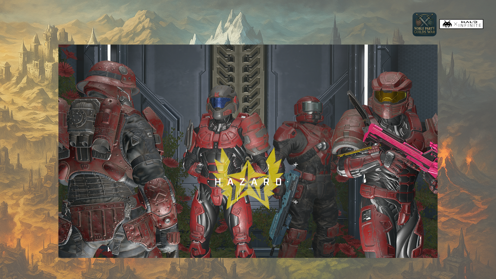
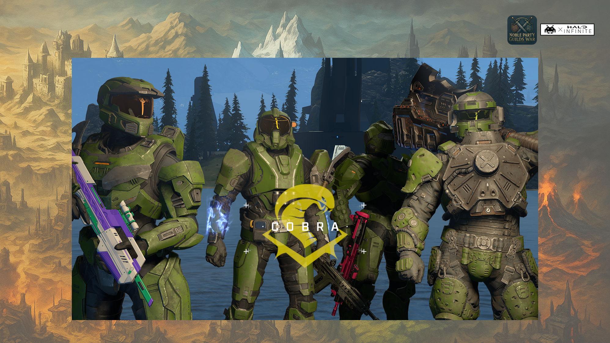
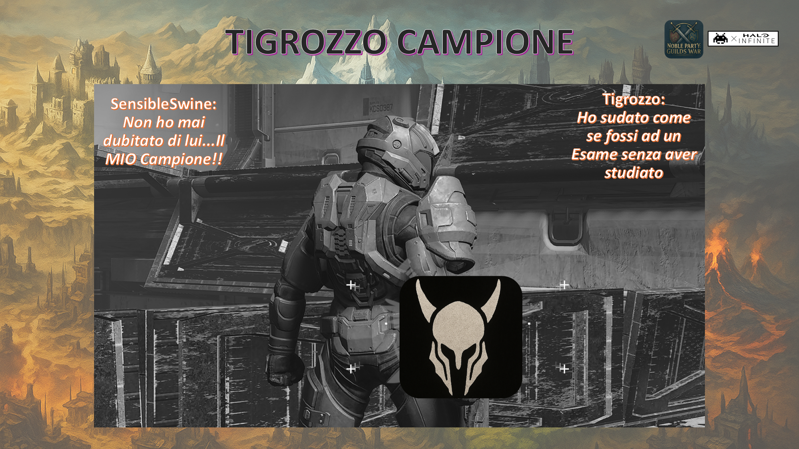
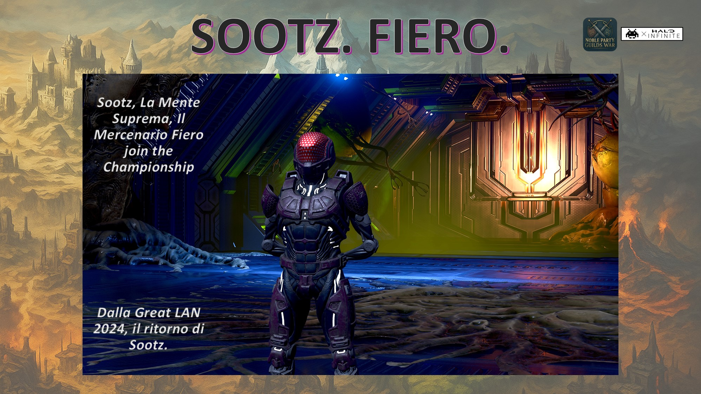

Chronicles
Qui troverete tutti le storie che hanno accompagnato il Campionato Noble Party Guilds War. Sono ricordi di momenti passati insieme (fantasia è stata aggiunta). [Torna alla Home]
❮

Qui troverete tutti le storie che hanno accompagnato il Campionato Noble Party Guilds War. Sono ricordi di momenti passati insieme (fantasia è stata aggiunta). [Torna alla Home]
Questi sono i racconti delle Guerre dalla Campagna Ufficiale.
1 Dicembre 2025. Preambolo: un annuncio importante.
Ore 8:00 di mattina, la forgia è invasa da volantini
"ore 14:00, annnuncio Bastione. Bastione Riemerge".
Mercenari speranzosi di enorme ricompensa, Leaders incuriositi, Valore Preoccupato.
Sembra che questo annuncio non sia stato proprio comunicato a i membri di Bastione, che costringono
Sootz a spostare una call aziendale dalle 14:00 alle 14:30, sfiora il licenziamento,
"Speriamo ne valga la pena" pensò. Ifrid invece comincia a stropicciarsi le mani.
Sono proprio queste le notizie che fanno oscillare le scommesse: emozioni, incertezze, annunci.
E questo brio porta Ifrid a fiondarsi ancora in pigiama al centro scommesse e ad aumentare la sua quota
"sul tonfo di Bastione".
Nella corsa sfrenata di Ifrid verso il centro scommesse, Glimpse incuriosito dalla possibilità
di vincere grosse somme di denaro, uscito da uno dei tanti Dangeon notturni allenandosi per la prossima sfida,
si mette a correre insieme ad Ifrid e alle sue risate isteriche di gioia:
diventano due bambini delle elementari che corrono per prendere il gelato.
I Due sfrecciano attraverso il Mercato di Bucinor per raggiungere il centro, lasciandosi alle spalle
una figura avvolta con un mantello che cammina in direzione opposta...
Ore 14:00. Bastione droppa quello che sarà la sua prima grande genialata di marketing
per il recruitamento di massa. Bastione, come i militari e i poliziotti,
regala il suo set di slides della campagna "Bastione Ti Aspetta"
(che include 10 goleador e 2 hotwheels per i nostalgici).
In questo plico viene descritta la gloria di Bastione negli anni (non ben definiti).
Il rate altissimo di vittorie, testimonianze dei fedelissimi come Flying WC e Sootz.
Accoglienza, Fratellanza, Difesa Inespugnabile e tante belle parole che ricevono un mix di reazioni.
Glimpse non se la beve, ride e raddopppia la sua scommessa seguendo Ifrid. Baudo è estasiato.
Swine è incuriosito, potrebbe trovare un carismatico alleato con grandi doti comunicative.
Sootz viene subito interrogato sulla veridicità della sua testimonianza, un rotto "Che ha scr..."
viene seguito da un fragrante "Tutto Vero!".
Mentre il messaggio di Colt non definisce bene quale sia il suo piano:
"sempre pronto a tradire", ma quale Gilda?

2 Dicembre 2025. Bastione di Copter contro Valore di Noble, una lunga intensa giornata.
L'inverno alle porte, un martedì che firma la fine del Primo Capitolo del Campionato.
Ore 10:00, il ritiro ufficiale di Ifrid dallo scontro, ma con l'augurio del tonfo di Bastione strappando in piazza
il plico della campagna marketing di Bastione.
Esplicita pure la scelta piazzata nel centro scommesse (chiama mele i succosi bigliettoni da 100 euro),
e sorge il dubbio fra i presenti che sia Ifrid stesso il proprietario di questo centro: un mistero.
Certezza invece la sua voglia di mettere zizzagna, come sempre.
A questo affronto, la pronta risposta di Copter che gli augura di prendersi un pene sul retro.
Forse quello di Aero, droppato più tardi nella chat, dalla lunghezza elefantesca.
Il marketing di Bastione è arrivato fra le mani di Pino che squarcia l'Agora con il suo grido
di portare i suoi servigi a Copter. Segue un attento silenzio che non durò troppo.
Perchè Swine sfodera ancora caldo dalle sue tasche l'ultima edizione di "Cazzo che Schiappa",
una ingnobile rivista di paparazzi e gente poco raccomandabile che getta fango su Mercenari e Leaders
puntando il riflettore sulle loro partite peggiori. In prima pagina, a caratteri cubitali la rivista scrive
"Pino, il Reverse Champion" parla di una partita passata dove Pino è arrivato ultimo per ben 5 turni, aggiudicandosi
l'ultimo posto in classifica non solo finale ma pure cumulativo. Swine se la ride, e cerca complicità
nel suo seguace Skate che prende larghe distanze.
Questo crea scompiglio nell'Agora, ma non influenza la decisione di Copter di dare a Pino
il titolo di "Cadetto" Bastione (..non ci allarghiamo troppo). Un leggero dissing fra Colt e Puffo
definisce la loro separazione per lo scontro.
Puffo si rende conto che dovrà unirsi a Noble. Estrae un fucile a canna mozza,
e si spara su un piede per sentire meno dolore,
"Ok, sono pronto" dice a denti stretti.


Lontano, dall'Agora, nel Mercato di Bucinor, a poche ore dallo scontro, alcune figure comprano nuovi arsenali. La bancarella "Fartt" offre strani oggetti, fra cui una paperella gialla da vasca da bagno che prende l'attenzione di Drius. "Questa", Drius non perde tempo a premere la paperella che emette un suono irritante: perfetta. Raggiunge lo scontro soddisfattissimo pensando che pure stasera flammerà molti se non con i colpi di fucile, a colpi di paperella (il suono di quella paperella ancora riecheggia su Discord). Alla stessa bancarella, si avvicina questa figura avvolta nel mantello e un oggetto in particolare prende la sua attenzione. L'elmo di Achille. Lontano il passato di gloria su halo 3, i ricordi affiorano e tornano in vita quando tocca il freddo curvo metallo. La figura si toglie il mantello, è Karmic, che ha scelto questo arsenale sicuro che gli darà la giusta motivazione per lo scontro. "Sono 200 mele" dice il proprietario della bancarella. Karmic si gela, i ricordi svaniscono perchè la Gilda Sciabola ad oggi è povera come la merda e non può pagare. Con una azione fortuita, afferra l'elmo e scappa. Dalle grida delle bancarella "Fermateloooo", Karmic risponde correndo "Vincerò e ti pagherò domani, promessoooo".

Ore 19:50. La campagna di reclutamento di Copter non è finita. Droppa la sua ultima Hit
"Bastione, la miglior difesa è l'attacco". Un messaggio di battaglia che porterà
se non stasera ma in futuro, nuove reclute Bastione. L'epicità è nell'aria.
Ore 22:30. Inizio dello scontro, Copter guarda Colt che arriva a Bastione e chiede "dove è Puffo?",
la risposta di Colt è netta "Non ti serve quella scartina". Ma Copter
si ricorda bene il messaggio di Colt droppato il giorno precedente "sempre pronto a tradire",
era un bluff o diceva sul serio e sono fregato? Le intenzioni di Cobra purtroppo si basano sul voltafaccia continuo e imprevedibile,
a pochi minuti dallo scontro non gli resta che reclutare Colt. Baudo si unisce a Bastione abbracciando Copter, da anni non combattevano insieme.
Pure Swine si unisce a Bastione ma Skate, suo seguace, disgustato nel venire a sapere che Swine legge quelle riviste spazzature, si unisce a Valore.
Karmic arriva correndo e sudato fradicio con l'elmo di Achille alle porte di Valore. Noble guarda l'elmo "questo è un buon segno".
Glimpse si unisce a Valore (cercando di aiutare la sua scommessa e quella di Ifrid) e lascia a Copter un foglio di carta con un disegno di un pene, disegnato male.
Clavuss esordisce con "Gnamo Gioca", Drius con la bava alla bocca afferra la paperella e Puffo si mette in posizione (con falso sorriso e con il piede fasciato).
Questo scontro, grazie al marketing di Bastione, ha portato in partita tutti gli 8 Leader Principali. Uno small taste di quella che sarà l'ultima Guerra
del Capitolo 5, l'ultimo, con tutte le Gilde in gioco.


Iniziano gli annunci per le partite, qualche saluto prima dello scontro. Ma i componenti di Valore si accorgono di un fatto insolito. Noble è dislessico.
Clavuss viene chiamato "Santa Clauss", Colt "GlimpseColt", insomma da una parte il carismatico comunicatore di Bastione,
dall'altra parte un Leader che non sa mettere due parole in fila.
Puffo e Karmic si guardano, poi guardano Glimpse e Clavuss preoccupati. Ma Skate è sereno.
Lo scontro si apre con Massacro su Sandtrap, dimora di Valore.
Noble con forza "sempre a coppie e prendete i veicoli", Valore è bollente. Dominio veicoli porta valore a un +15 sopra Bastione
che si rifugia in una roccaforte di sabbia circondato dal nemico. Tutti i veicoli ronzano intorno a Bastione tranne uno.
Il Wraith, fermo in base Valore, alla guida si trova Clavuss.
Come Link di Zelda che non è capace di saltare,
Clavuss non è capace di usare le frecce direzionali per muoversi (sebbene usate per arrivare al Wraith).
Glimpse alla guida della torretta chiede "che si fa, si va?".
Allora Glimpse scende, mostra a Clavuss le istruzioni di gioco di Halo Infinite, e insieme sfrecciano finalmente verso il nemico.
Karmic respawnna dicendo "ho 30ms di ping", una benedizione, proiettili vengono spediti allo Starlink di Musk
e ricadono in faccia a Bastione riducendolo in sabbia.
La partita sembra finita, ma Bastione con un colpo di reni cooperativo prende tutti i veicoli disponibili. Proprio
come aveva fatto Valore poco fa. Bastione marcia verso un pareggio di punti a velocità supersonica.
Baudo, la furia aerea, Flying WC e Sootz i seguaci fedeli al loro leader prendono spazio nel deserto.
Ma sorgono le prime polemiche dalla distesa di sabbia. "questa mappa è sbilanciata",
"se prendi i veicoli vinci". Grida che vengono silenziate da Valore, la battaglia finisce.
Lo scontro prosegue con una partita sketch, dove Copter cerca relax e forse una vittoria fortuita.
Castello di Peach, tutti contro tutti, ancora una volta dopo Cobra vs Pericolo, si ripropone ai giocatori.
Colt non è convinto di questa modalità, prova a contraddire la scelta di Copter
ma quest'ultimo lo tace dicendo "gioca e non tradire".
Copter brandisce la prima arma, urla e preme sul grilletto. Ma è una "arma che spara opinioni"
letteralmente non fa niente. Si ritrova sotto il fuoco nemico e viene spazzato via da colpi non definiti.
Pure Swine riceve una arma inutile ma non demorde, la getta nel vuoto e ne raccoglie una altra. Niente, altra arma inutile.
Non demorde e ne raccoglie una altra. Passeggia come un contadino in un orto a raccogliere erbacce mentre gli altri vedendo la sua disperazione
lo lasciano in pace nella sua pazzia per trovare "una arma che faccia qualcosa". Perfino Skate è dispiaciuto per Swine.
Sebbene una contesa sfida fra Baudo e Puffo. Puffo trova una arma definitiva. Come la definirebbe Penny un tempo "arma che pisciava missili".
Puffo vince Peach Castle, guardando stavolta Colt dall'alto.
Si torna ad un massacro standard. Mappa di Halo Reach. Stavolta con una nuova richiesta "Niente Veicoli".
La sfida si decide solo con la forza bruta delle armi e le skill da corridori (JoeMoo avrebbe dominato).
Siamo alla terza partita e Drius non ha smesso di premere la paperella ad ogni punto che ottiene,
"quack", e completa le sue frasi con un "quack".
Infra partite Drius ha letteralmente flammato qualsiasi giocatore che poteva flammare con questa paperella.
Drius è al settimo cielo, dormirà con la paperella stanotte, qualsiasi risultato.
Queste irritazioni sono forti e sfociano in altre polemiche: "Camperoniiiiii". Le grida frustrate di Bastione
percorrono la mappa in lungo e largo. Ancora una volta, polemiche infondate.
Non solo è stato chiesto di rimuovere i veicoli portando giocatori a percorrere lentamente lunghi tragitti,
ma ci sono letteralmente teletrasporti che connettono orizzontalmente la mappa permettendo di spuntare alle spalle
del nemico o guadagnare campo in edifici strategici.
A questo punto, pure Swine è irritato. Insolito. Il suo atteggiamento giocoso dignità-less non fa capire
quanto sia serio oppure no. Ma stavolta si fa sentire.
Ultima partita. Dominata da errori tecnici, equilibrio ed epicità.
Scelta ricade su Controllo Totale. Un grande ricordo invade la lobby di giocatori:
The Great LAN (scontro non del Campionato ma evento del 2024). Dove naque proprio in questa modalità l'offesa "pensa solo alle kills"
per Colt e le grida di Baudo "forzaaaa" per spingere alla vittoria. La partita inizia sulla mappa Commando,
ma la richiesta di "no veicoli" di Copter non viene ascoltata. La partita, una volta conclusa, va a monte.
In questa partita vediamo un Colt sniper che protegge una zona a distanza. Ma pure la realizzazione di Copter su Pino.
Pino è ancora un cadetto e ha bisogno di training (molto training).
Alla presa di un veicolo d'assalto, Copter si mette alla guida e Pino al mitragliatore.
Sfrecciando per raggiungere la zona da controllare, Pino, per ragioni non troppo chiare, lascia la torretta.
Quindi Copter si vede sfrecciare senza armi su quattro ruote verso una zona piena di Valore.
A pochi metri, prima dello scrosciare di proiettili dai fucili di Valore, Copter si ricorda i bei tempi in cui
Copter e Noble su un unico veicolo riuscivano a pareggiare partite oramai perse, a spingere squadre in vasti universi di gioco.
Ma questo ricordo fu sommerso dalla sua ira nel grido "Pino perchè sei scesooooooooo".
La partita viene annullata, viene riproposta senza veicoli, ma si bugga. Problema tecnico.
Si narra che fu la concomitanza della cattura di tutte e tre le zone in contemporanea
a Pino che si è suicidato con il bazooka ha far buggare la mappa.
A questo punto Baudo, per venire in aiuto al problema tecnico, propone Gran Paradiso Controllo Totale senza veicoli.
Contro regolamento si, ma perfettamente funzionante.
Sappiamo tutti cosa nasconde Gran Paradiso. Una arma di distruzione di massa chiamata la Coda dello Scorpione.
La partita inizia e Colt crasha. Noble preoccupato per un altro problema tecnico, nella sua dislessia, dice parole a caso.
Valore in confusione. Bastione prende il sopravvendo e ottiene il primo punto.
A Bastione che Colt avesse crashato non gliene poteva fregare di meno.
Puffo e Karmic vedono Noble in difficolta grammaticale e cercano di tradurre cosa vuole ma invano.
Quindi decidono di prende le redini di Valore. "A gruppi di 3 sulle zone". La matematica non
è il loro forte con 3 zone e 7 giocatori.
Ma il piano funziona. Non domina, ma funziona. Infatti, esisterà per tutta
la partita un susseguirsi di attacco e difesa di zone.
Non c'è dominio, semplicemente pura rotazione. Partita equilibratissima e difficilissima.
Perfino Drius ha posato la paperella.
Quest'ultimo, decide di appollaiarsi in cima a Gran Paradiso e cominciare a fare kills dall'alto.
Torna ad essere cicciobrufoloso e Karmic non ci sta.
"Gnamo scendiiiiii basta fare il camper di merda". Dall'altra parte,
Karmic scopre per la seconda volta un valido Mercenario: Clavuss.
Non è la prima volta che lo nota e pondera su come arruolarlo in futuro.
Nel gran finale, Copter oscura il sole saltando dall'alto con la coda di scorpione e prende una zona
pensando di aver eliminato Valore. Ma non aveva considerato gli innumerevoli allenamenti di Glimpse nelle Dangeon
più remote. Dove Glimpse aveva imparato ad essere invisibile al nemico senza avere l'equipaggiamento dell'invisibilità:
semplicemente accucciandosi, scomparendo sul radar, fino a che tutti i giocatori si dimenticano della sua presenza in partita per poi...sbucare alle spalle del nemico.
Glimpse, si alza da un cespuglio circostante, pieno di foglie sui capelli corre alle spalle di Copter.
Glimpse potrebbe dare un singolo cazzotto a Copter per eliminarlo ma decide di umiliarlo.
Brandisce il martello e spazza via Copter e la sua arma infernale. La partita finisce in pareggio.
Noble, nella sua dislessia, decreta Bastione vincitore delle innumerevoli partite Controllo Totale.


Copter frustrato, ha capito che il solo ritorno non è sufficiente. Ci vuole di più.
I suoi fedelissimi di Bastione non lo abbandoneranno mai, ma non basta. Ci vuole una spinta in più.
Fu proprio Bastione ha vincere l'ultima partita a 8 Gilde del Noble Party Gran Paradiso (Marzo 2025).
Quale fu la formula vincente? Copter, si ritira nelle sue stanze militari per pensare.
Bastione è una grossa fortezza robusta e pesante. Lenta a partire come un diesel, sta solo prendendo la rincorsa.
Valore ha dominanto sulla Guerra. Ma è veramente stato Noble e la sua dislessia?
Oppure è stata la fortuita composizione della Gilda da Leaders e Mercenari?
Ci sono stati troppi problemi tecnici che hanno annebbiato la gilda Bastione, stremata, dalla quale Valore ne ha preso forza. Cosa riserverà il torneo?
Altrove, Ifrid esce dal centro scommesse pieno d'oro. Drius dorme felice con la paperella. Baudo porta riflessioni ad Aquila per i prossimi scontri. Puffo torna a ricamare a maglia.
Karmic paga il suo debito al mercante per l'elmo di Achille e torna dagli Sciabola. Swine chiede scusa a Skate per la rivista.
Pino vuole essere più forte e si unisce a Glimpse in una Dangeon. Colt brama nell'ombra.
Sootz e WC, silenzioni si ri-organizzano per la prossima Guerra. Gli altri Mercenari, leggono il risultato e riflettono sul da farsi.

27 Novembre 2025. La seconda parte di The Great LAN porta in arena nuovi e vecchi giocatori. Il Signor Colt, The Best Spartan, odiato e amato da molti (ma soprattutto odiato) guida la gilda Cobra. Si trova di fronte Puffo, uno degli ultimi arrivati su BOXALMATCH, leader di Pericolo. Pescato da un girone di partite classificate, e si unisce a questo Campionato (senza il suo consenso). Una sfida che atterra su tutti i giornali nei peggiori meandri della Forgia, facendo aderire pure gratuitamente molti Mercenari. Si narra che girava una taglia sulla testa di Colt e qualche Mercenario ha preso occasione di unirsi a Pericolo gratutitamente. Pericolo ha un Mercenario di grande lealtà che risponde alla chiamata (nonostante costui abbia esasperamente ripetuto "basta giocare ad Halo ti prego"), si parla di Bomber Sandyokhan. Un amico di lunga data che non prende sotto gamba questo Campionato. A Pericolo si unisce pure Tigrozzo, speranzoso di guadagnarsi la taglia sulla testa di Colt. Vediamo pure Flying WC in Pericolo, senza motivo di vendetta o altro, ma con tanta voglia di prendere a pugni la gente.

Dall'altra parte, Mercenari con motivazioni misteriose si uniscono a Cobra. Ifrid, una delle più antiche (e una delle tante) nemesi del signor Colt, si unisce a Cobra nonostante abbia visto l'annuncio sulla taglia. Scoprimmo poi a fine Guerra che Ifrid era un assiduo frequentatore di un rinomato centro di scommesse, e secondo i suoi calcoli (ancora ignoti), doveva unirsi a Cobra per sperare di guadagnare più della taglia. Ancora più oscuro il piano di Glimpse. Nonostante un credente della gilda Cobra, sappiamo tutti quanto è attaccato al denaro. L'annuncio della taglia e la soffiata del rinomato centro scommesse non lo hanno fermato all'unirsi a Cobra: perchè?

Nuovi Mercenari si uniscono a questa guerra. Mercenari di lunga data, non interessati a ste cagate delle scommesse o dei soldi. Vengono per divertirsi e stare insieme. Skate, con i suoi orari dove la luce solare deve essere assente, si unisce a Cobra. La sua presenza per Cobra sarà indispensabile, ma pure quella di Clavuss che esordisce "io sto con te Colt". Un messaggio chiaro che ci ricorda il suo motto "Pena poco e gioca" per andare a letto presto che domani si lavora (spoiler alert: per questa guerra non andò a letto presto).

La Guerra parte, e sarà completamente invasa dalle offese a Colt.
Come Larry Bird, Puffo di Pericolo gioca sulla variabile psicologica e cerca di affondare l'animo di Cobra.
Stranamente....perfino tutti i componenti di Cobra offendono Colt, dandogli dell'incapace.
Ma molti non sapevano che Colt e le offese sono come Bane e l'oscurità:
"Oh, quindi pensate che le offese possano farmi qualcosa. Avete appena scoperto come si offende scartine;
io sono nato fra le offese, sono stato modellato da esse. Io non ho visto un complimento fino a quando non ho cominciato a lavorare"
(e il complimento è stato "bravo che hai fatto benzina al furgone")
Questa frase rafforza il morale di Colt nella prima partita, ma Pericolo firma la prima vittoria.
Puffo decide spavaldamente di dare a Colt qualcosa di più facile per vincere e decide una partita Sketch Tutti contro tutti.
A questo punto i mercenari di pericolo guardano Puffo dicendo "ma che cazzo fai?".
Sandyokhan chiede ripetute volte "ma che vuol dire le armi sparano colpi casuali?".
Puffo non lo ascolta, ascolta solo il suo ego di aver vinto la prima partita e lo porta alla disfatta davanti allo sguardo di Peach e del suo Castello.
Con La terza partita, Cobra vuole dimostrare che "non sa fare solo le kills".
Una offesa usata ripetutivamente contro Colt quando ricevette il premio The Best Spartan ma che ancora non lo scalfisce.
Si uniscono alla battaglia Noble di Valore, e Drius di Valchiria in Pericolo. Rambaudo di Aquila, e Karmic di Sciabola con l'immagine del cicciobrufolo Drius
non gli resta che unirsi a Cobra.
Alla scelta della partita con obbiettivo "Re della Collina", Swine che non ha partecipato alla Guerra si sveglia nel bel mezzo della notte urlando "No quella nooooo".
La tanto odiata modalità di Swine e Colt viene proprio scelta da quest'ultimo per dimostrare le use abilità Warcraft.
Cobra non si da per vinto, regge la partita fino alla fine, ma Pericolo ha la meglio.
A poco è servito il potere speciale di Glimpse con una costante presenza invisibile a contendere collina.
Forse ancora non maturo l’ultra instinct sbloccato da Ifrid che, con un “ahhh ma guarda”, passa ai 120fps nella sua macchina infernale (PC Desktop con lucine).
Le offese divampano, "vedi sai solo fare le kills" "cosa scegli ste modalità a obbiettivo che non ti riescono".
E qui che Pericolo fece il suo secondo ed ultimo errore. "Beh allora ne scegliamo una altra con obbiettivo che ne dici".
La scelta ricade su "Cattura la Bandiera Singola".
In questa partita c'è stato quello che si chiama "tipping point": un momento in cui qualcosa di significante ha cambiato le sorti dello scontro.
Con la bandiera quasi in base avversaria per essere catturata, Pericolo cerca di ripristinarla, ma dal cielo, piomba Clavuss. E con lui, una scarica di piombo e granate.
"Il cielo si oscurò da li in poi fu buio per Pericolo". Uno a zero, due a zero, tre a zero. Cobra, la partita perfetta.
Nonostante una ora di offese da parte di Pericolo e di Cobra stesso contro Colt, una Guerra finita in pareggio dimostrando che gli attacchi psicologici non hanno effetto contro Cobra.
Pericolo, una Gilda da temere ha imparato una lezione da questa guerra. E Cobra, una Gilda composta da Mercenari che hanno strane motivazioni ha tenuto testa allo scontro.


8 Ottobre 2025. Con l'inizio del Campionato, c'è voglia di giocare, di sperimentare, di mettersi alla prova.
The Great LAN, un ricordo fantastico diventa il centro delle prossime Guerre. Vede protagonisti giocatori storici.
In questa Guerra, Sciabola guidati da Karmic sfida Ade guidati da Swine. I fratelli di Halo 3 messi a confronto.
Non sono soli, Mercenari di lunga data vengono reclutati.
E la guerra si apre con la più alta sfida di sempre: il Mio Campione.
Sciabola si trova con un Mercenario insolito ma fiducioso, Pino's Carrot. Il Mercenario non finisce la frase
"Bei tempi sul Reach..." che Karmic lo spinge a calci nell'arena chiedendo la vittoria dopo aver speso tutti questi soldi per reclutarlo.
Ad affrontare Pino, Swine, fra fragorose risate, ci ha già pensato. Non ha scelto un Mercenario qualunque. Ha scelto Tigrozzo.
Gamer storico di Halo 3, con patente di guida per soli Elephants, adesso, si ritrova solo in Arena. 1v1. Sudore, Stress, guardandosi alle spalle uno Swine fiducioso "vincerai".
5 punti per vincere. Il tutto inizia in parità. Le partite vanno avanti dove Tigrozzo e Pino si uccidono perfettamente a vicenda.
Lo stress aumenta come pure l'impazienza per vincere di Pino. Sarà questa a fargli perdere la testa.
In una mappa da 1m2, Pino decide di afferrare il fucile di precisione per far fuori il suo avversario.
"Se lo becco, un colpo e muore" fu la sua giustificazione. La furia di Karmic e le sue grida "Ma che cazzo ti metti a fare il cecchino???"
oramai avevano invaso l'arena. Ma non bastò a far cambiare idea a Pino.
Dall'altra parte, Tigrozzo, impassibile (forse per il troppo stress) decise di restare fedele al suo fucile d'assalto. E alla fine, sciolse nel piombo Pino.
La Guerra era appena cominciata. Ma nella mente di Karmic era già finita.

Il secondo scontro vede un team Sciabola pieno di grinta furiosa ma disorientato. Ade prende il vantaggio della situazione impugnando ogni arma disponibile sulla mappa ripetutamente.
La mappa, Salvezza scelta da Sciabola, fu la loro Perdizione.
Terza partita, gli Sciabola sono stremati. Per non ripetere di lasciare tutte le armi più forti al nemico, in un atto di follia, Karmic prende il bazooka e si lancia nel vuoto, autodistruggendosi.
Ancora una volta la disfatta per Sciabola. Troppo dolore dal Il Mio Campione, troppa sofferenza di aver perso nel proprio terreno, ma nel silenzio post partita, Sciabola si riorganizza.
Un ultimo massacro, una ultima carica su Lattice. Una mappa per partite classificate dove Sciabola e Ade sono concentratissimi.
Sciabola vede la luce in fondo al tunnel, conquista il fucile di precisione più volte e con combo di squadra arriva alla vittoria.

6 Ottobre 2025. Il Campionato si apre proprio con la LAN, un richiamo alle origini di un lontano 2014 in quanto è
proprio Rambaudo con Aquila a sfidare Drius con Valchiria. Una sfida fra gamers moderni (cicciobrufolosi) e gamers passati.
Non sono soli. La curiosità di questo Campionato porta altri leader di Gilde a fare da spettatori e unirsi.
Fra i quali Karmic di Sciabola, Noble di Valore, Puffo di Pericolo e Swine di Ade. E tanti Mercenari sono stati comprati.
Un inizio Guerra proprio da gamers moderni. Drius porta subito in tavola una delle sfide più ardue per Rambaudo: massacro cecchini e pompa.
Per anni Rambaudo si è allenato solitario nelle varie forge per migliorare la sua precisione.
Non sono affatto stati invani, ma non ha considerato che le sue sole capacità non bastano per vincere una guerra, servono pure quelle dei Mercenari.
Una disfatta. Drius gioca al piattello sui mercenari di Baudo e seppellisce il leader Noble sotto proiettili a distanza mentre mangia fonzies ridendo a squarcia gola.
I mercenari di Valchiria sono disgustati dal loro leader, ma la somma di danaro che hanno ricevuto è stata troppo elevata per essere rifiutata.
Karmic di Sciabola, che ha sciolto Aquila a colpi di pompa, non regge il cicciobrufolame di Drius e decide di prendere una pausa partita.
Ad ogni modo, ci vuole ben altro per togliere la determinazione di Rambaudo.
Rambaudo prende le redini della seconda partita portando tutti quanti in un abbandonato Jurassic Park.
Swine e Puffo entrano in partita.
Puffo e Rambaudo creano azioni combinate che lasciano Drius finalmente senza fonzies fra le mani.
Swine, nonostante unito a Valchiria, ride della loro disfatta. Inoltre, per Swine, non basta la sua invisibilità per non farsi vedere dal nemico.
Terza partita e quarta partita, i giocatori sono a questo punto tutti concentrati.
Drius abbandona risate e altre patatine per diventare un vero leader.
Siamo a Sanctuary dove un massacro con escalation fino a mazzate con un teschio mette in difficoltà tutti i team.
Non è una passeggiata per nessuno, ma alla fine Valchiria ha la meglio.
Ultima partita vede uno scambio di mercenari e leaders. Rambaudo si fida di Swine, e Puffo da una possibilità a Drius (non il contrario).
Rambaudo sceglie il posto: Boardwalk. I ricordi di un Reach incredibile infiammano Baudo.
Un mercenario si distingue con pugni incredibili, è Flying WC.
Ifrid, altro mercenario leggendario, non ha la meglio in questo paesaggio cittadino: preferisce campi aperti con veicoli pesanti.
Fuoco incrociato, apnea d'azione, nessuna pausa.
L'ultima partita vede Valchiria vincitrice per 1 punto. Una sfida incredibile. Si conclude la LAN.

Questi sono i racconti delle Guerre dalle Side Quests.
23 Ottobre 2025. Giornata Invernale e silenziosa, ma dal sonoro silenzio un boato di battaglia.
È Sootz.
Ha voglia di combattere e la sua voglia di sangue viene subito accolta dalla tenebrosa Gilda Ade
con il suo controverso Leader Swine.
Valore, guidata da Noble, viene chiamato a combattere. Recluta un famoso Mercenario, Glimpse. Famoso, quanto costoso.
Guerra di Squadre Duos. Rapide ed Efficaci.
Si comincia in Abbiocco, Italia, dove Swine dimostra un incontrastata Leadership su Sootz.
Valore cade in confusione, ma Glimpse si sta solo scaldando per vincere (ed eventualmente sabotare haha).
Valore ha scelto il campo di battaglia, ha pure applicato le armi della Gilda, ed ha perso.
Ade, orgogliosissimo, invita a banchetto Valore nelle sue terre dove applica le armi di Ade e spera di far impazzire se non vergognare il nemico
di una doppia sconfitta. Un Bluff.
Valore schiva tutte le trappole, Glimpse è bollente. E Valore vince per un soffio. Esattamente 3 secondi.
In queste partite Sootz ha dato prova che l'evento del 2024, lo ha forgiato in un Mercenario di tutto rispetto
sebbene la sua lunga assenza e sa ascoltare il suo leader Swine.
Ma non basta.
Ade recluta Glimpse all'insaputa di Noble pagandolo una fortuna. Ma Noble, ha avuto la stessa idea comprandosi la fiducia di Sootz.
Nonostante questo scambio di Mercenari, Glimpse viene a sapere che Noble ha pagato una cifra molto più alta di quanto ricevuto da Swine.
Il rancore di Glimpse si fa sentire in partita non dando il massimo. Sootz, alla guida del Gravemind, domina una Partita Sketch e non si ferma lì.
Prende le redini di una seconda partita Sketch facendo esplodere in faccia ad Ade Grunt volanti portatori delle famose granate "appiccicose".
Queste "appiccicose", sono tutt'oggi il terrore di Swine, come il coccodrillo per capitan uncino.


Prima di giocare ricordati di leggere il Regolamento.

Gilda Ade, Gilda Aquila, Gilda Bastione, Gilda Cobra, Gilda Pericolo, Gilda Sciabola, Gilda Valchiria, Gilda Valore.

I vincitori di questo Campionato e informazioni sul punteggio sono su Awards.